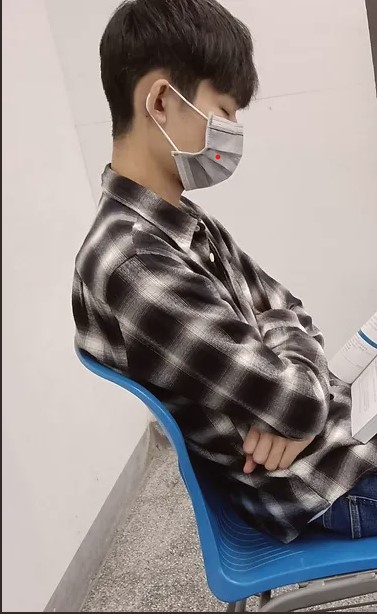
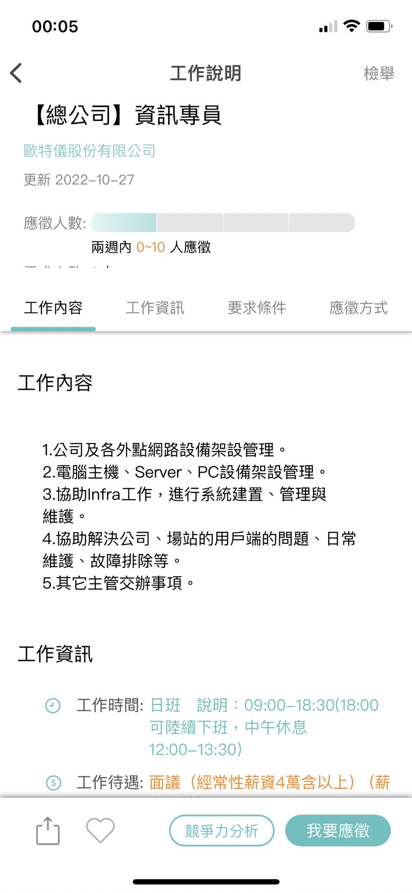
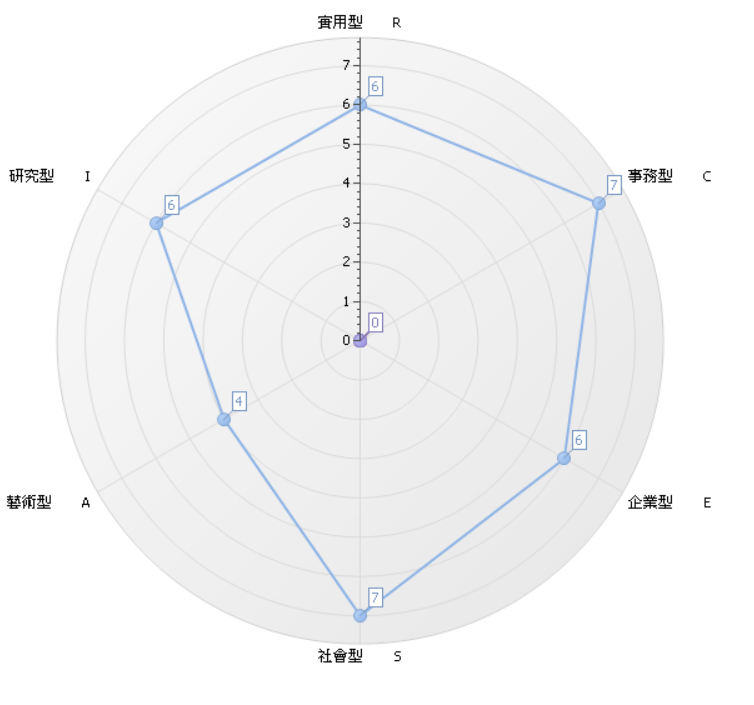

See my work

系級:資訊管理學系2B
學號:411030313
E-mail:s1103031@gm.pu.edu.tw
父母常說的話:
努力不一定會成功
但不努力一定不會成功
我的興趣是打籃球和使用3C產品
最近在漂鳥通訊學習維修電腦軟硬體的問題

歐特儀股份有限公司
工作內容:
1. 公司及各外點網路設備管理
2.電腦主機、Server、PC設備架設管理
3.協助Infra工作、場站的用戶端問題與日常維護、故障排除等
薪資待遇:4萬以上
品牌特色:
1.結合人文藝術、優質服務、高科技管理，為在地打造專屬停車場。
2.科技管理安全監控停車場
我在這次的作業裡,發現了架設網站其實也不難，而且也讓我對未來的工作有了期待，所以我必須在大學的這幾年必須更努力地考取相關證照及相關專業知識

那我的職涯分析顯示出我的事務型以及社會型較高，但我對於電腦維修還挺有興趣，所以電腦的軟硬體問題我會特別有研究精神，從事這種每天都有不同內容的，而且都帶有挑戰性及需研究精神的工作，使我對這份工作不會感到無聊。
在大學的期間，我學習了資訊管理相關的專業知識，我剛進這個系是個完全沒有任何程式基礎的人，第一次接觸Java我真的學習的非常的辛苦，但我沒有因此就怯步，我還是勇於接受挑戰，找出各種方式去學習，到了大二我接觸到了HTML網頁前端設計語言，使我對網頁設計產生了興趣。
而我在大學期間的時候，曾做過班代，是因為我想認識各式各樣的人，而這樣會是最快的方法，所以我就一邊服務同學一邊很快地跟所有人打成一片。